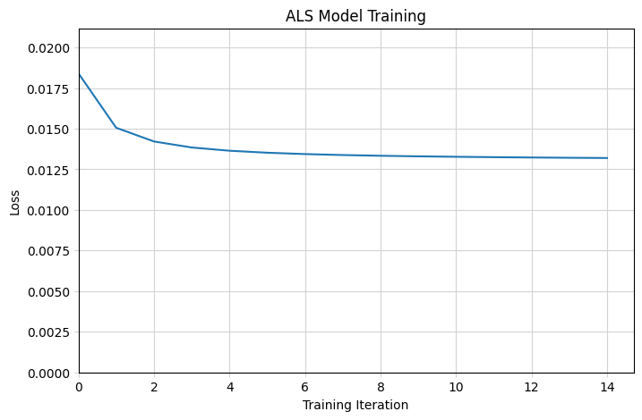
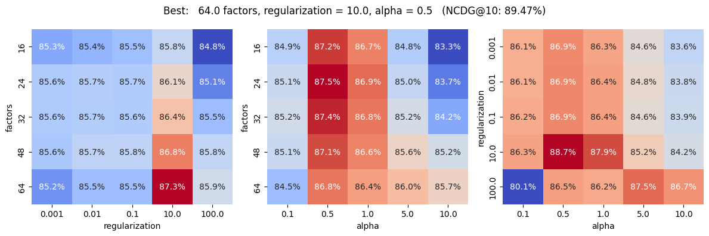

import itertools
from pathlib import Path
import pandas as pd
import numpy as np
import matplotlib.pyplot as plt
import seaborn as sns
from implicit.cpu.als import AlternatingLeastSquares as ALSModel
from numpy.typing import NDArray
from scipy.sparse import csr_matrix
from sklearn.metrics import ndcg_scorePart 3: Alternating Least Squares Model
A common type of recommender system is collaborative filtering, where the system suggests items to users based on the preferences/behavior of similar users. In other words, it looks at similar users, which items they enjoy, and makes recommendations based off of this.
A common collaborative filtering model is Alternating Least Squares, developed by Yifan Hu et al in their 2007 paper Collaborative Filtering for Implicit Feedback Datasets. This model seeks to factorize the user-item matrix into matrices of latent user factors and latent item factors. For a quick synopsis of the model, take a look at this Medium article by Everton Gomede.
Fortunately, we don’t have to implement this model from scratch. We can use the implicit library in python for a simple implementation using SciPy’s CSR Matrix.
# Directories
root_dir = Path().resolve().parent
data_dir = root_dir / 'data'
final_data_dir = data_dir / 'final'
train_path = final_data_dir / 'user_items_1p_sample_train.feather'
valid_path = final_data_dir / 'user_items_1p_sample_val.feather'
test_path = final_data_dir / 'user_items_1p_sample_test.feather'
metadata_path = final_data_dir / 'user_items_1p_sample_meta.json'# Constants
USER_COL = 'user_id'
ITEM_COL = 'item_id'
RATING_COL = 'playtime'Load Data
Since we already have the data preprocessed and split into train/test sets, we can import these and go straight to modeling. For faster results, we’ll use the 1% sample to work with this model.
def get_user_item_csr_matrix(
df: pd.DataFrame,
n_users: int,
n_items: int,
) -> csr_matrix:
ratings = df.pivot(index=USER_COL, columns=ITEM_COL, values=RATING_COL)
observed_users = ratings.index.values.reshape(-1, 1)
observed_items = ratings.columns.values
R = np.full(shape=(n_users, n_items), fill_value=0.0)
R[observed_users, observed_items] = ratings.values
R[np.isnan(R)] = 0
return csr_matrix(R)
meta = pd.read_json(metadata_path, orient='index').iloc[:, 0]
n_users = int(meta.n_users)
n_items = int(meta.n_items)
df_train = pd.read_feather(train_path)
df_valid = pd.read_feather(valid_path)
df_test = pd.read_feather(test_path)
R_train = get_user_item_csr_matrix(df_train, n_users, n_items)
R_valid = get_user_item_csr_matrix(df_train, n_users, n_items)
R_test = get_user_item_csr_matrix(df_test, n_users, n_items)
display(meta)n_users 573.00
n_items 4110.00
sample_frac 0.01
test_size 0.20
valid_size 0.20
random_state 0.00
Name: 0, dtype: float64Model Implementation
The model is straightforward to use, though at the time of writing this, the implicit evaluation tools are not working well. However, we can make use of Scikit-Learn’s metrics for now, with a small addition to calculate the users-item recommendations.
class LossCallback:
'''
Stores loss data over the training iterations.
'''
def __init__(self) -> None:
self.iterations = []
self.losses = []
return
def __call__(
self,
iteration: int,
time: float,
loss: float,
) -> None:
self.iterations.append(iteration)
self.losses.append(loss)
return# Parameters
factors = 32
epochs = 15
loss_callback = LossCallback()
model = ALSModel(
factors,
iterations=epochs,
calculate_training_loss=True,
random_state=0,
)
model.fit(R_train, show_progress=False, callback=loss_callback)
losses = loss_callback.losses
# Plot training
fig, ax = plt.subplots(figsize=(8, 5))
ax.plot(losses)
ax.set_title(f'ALS Model Training')
ax.set_xlabel('Training Iteration')
ax.set_ylabel('Loss')
ax.set_xlim(0)
ax.set_ylim(0, max(losses) * 1.15)
ax.grid(color='lightgray')
ax.tick_params(color='lightgray')
ax.set_axisbelow(True)
plt.show()
Hyperparameter Tuning
Let’s work with some of the hyperparameters to try to get a best-fit model. There’s a few things we can work with:
- Number of Latent Factors
- Regularization Coefficient
- Positive Example Weight (Alpha)
Let’s do a grid search to see how the model performs on each and select the best parameters.
Note: The loss calculated is an adjusted version of mean-squared error, as written by Hu et al in their paper:
\[ \mathcal{L}(X,Y) \sum_{u,i} c_{ui},\big(p_{ui} - x_u^\top y_i\big)^2 ;+; \lambda\left(\sum_u |x_u|^2 + \sum_i |y_i|^2\right) \]
Where:
- \(p_{ui}\) is a binary preference:
- \(p_{ui} = 1\) if the interaction is present
- \(p_{ui} = 0\) if the interaction is missing
- \(c_{ui}\) is a confidence weight:
- for missing entries, \(c_{ui} = 1\)
- for observed entries, \(c_{ui} > 1\) (or generally larger)
def predict_als(model: ALSModel, R_true: csr_matrix) -> NDArray:
'''
Calculates the predicted ratings from the ALS model, setting non-observed
elements to 0.
'''
R_pred = model.user_factors @ model.item_factors.T
R_pred[R_true.toarray() == 0] = 0
return R_predfrom itertools import product
from tqdm.auto import tqdm
class ALSGridSearch:
'''
A class to store the variables for a grid search.
'''
def __init__(
self,
R_train: csr_matrix,
R_valid: csr_matrix,
iterations: int = 15,
random_state: int | None = None,
) -> None:
self.R_train = R_train
self.R_valid = R_valid
self.iterations = iterations
self.random_state = random_state
return
def run(
self,
factors: list[int],
regularization: list[float],
alpha: list[float],
verbose: bool = True,
) -> pd.DataFrame:
parameters = list(product(factors, regularization, alpha))
if verbose:
parameters = tqdm(parameters, 'Running grid search')
results = []
for f, lambda_, a in parameters:
loss, metric = self._run_once(f, lambda_, a)
results.append([loss, metric])
df = pd.DataFrame(parameters)
df.columns = ['factors', 'regularization', 'alpha']
df[['loss', 'metric']] = results
return df
def _run_once(
self,
factors: int,
regularization: float,
alpha: float,
) -> tuple[float, float]:
loss_callback = LossCallback()
model = ALSModel(
factors = factors,
regularization = regularization,
alpha = alpha,
iterations = self.iterations,
calculate_training_loss = True,
random_state = self.random_state,
)
model.fit(self.R_train, show_progress=False, callback=loss_callback)
R_pred = predict_als(model, self.R_valid)
loss = loss_callback.losses[-1]
metric = ndcg_score(self.R_valid.toarray(), R_pred, k=10)
return loss, metricgrid_search = ALSGridSearch(R_train, R_valid, 15, random_state=0)
gs_results = grid_search.run(
factors = [16, 24, 32, 48, 64],
regularization = [0.001, 0.01, 0.1, 10., 100.],
alpha = [0.1, 0.5, 1., 5., 10.],
)
gs_results.sort_values('metric', ascending=False).head()| factors | regularization | alpha | loss | metric | |
|---|---|---|---|---|---|
| 116 | 64 | 10.0 | 0.5 | 0.012502 | 0.894715 |
| 91 | 48 | 10.0 | 0.5 | 0.012830 | 0.890359 |
| 66 | 32 | 10.0 | 0.5 | 0.013356 | 0.886525 |
| 117 | 64 | 10.0 | 1.0 | 0.016469 | 0.886242 |
| 41 | 24 | 10.0 | 0.5 | 0.013728 | 0.884732 |
fig = plt.figure(figsize=(12, 4))
param_names = ['factors', 'regularization', 'alpha']
for i, (p1, p2) in enumerate(itertools.combinations(param_names, r=2), start=1):
ax = fig.add_subplot(1, 3, i)
sns.heatmap(
ax = ax,
data = gs_results.pivot_table(
index = p1,
columns = p2,
values = 'metric',
aggfunc = 'mean',
fill_value = 0
),
annot = True,
cmap = 'coolwarm',
cbar = False,
fmt = '.1%',
)
# Show best option in title
best_params = gs_results.loc[gs_results['metric'].argmax()]
plt.suptitle(
'Best: {} factors, regularization = {}, alpha = {} (NCDG@10: {:.2%})'
.format(
best_params.factors,
best_params.regularization,
best_params.alpha,
best_params.metric,
)
)
plt.tight_layout()
plt.show()
Final Training
Let’s do the final training using the test dataset.
R_train_full = R_train + R_valid # Since no overlap, only 0 for non-observed
model = ALSModel(
factors = 64,
regularization = 10.0,
alpha = 0.5,
iterations = 15,
random_state = 0,
)
model.fit(R_train_full, show_progress = False)
R_pred = predict_als(model, R_test)
R_true = R_test.toarray()
ndcg_10 = ndcg_score(R_true, R_pred, k=10)
print(f'Final NDCG@10: {ndcg_10:.2%}')Final NDCG@10: 79.79%